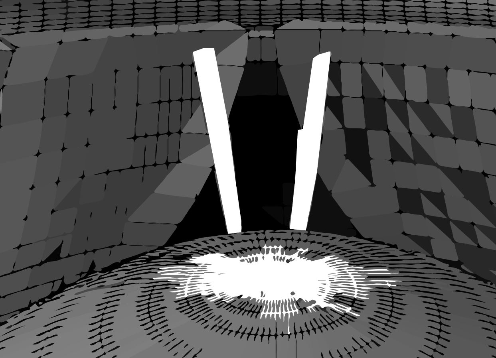
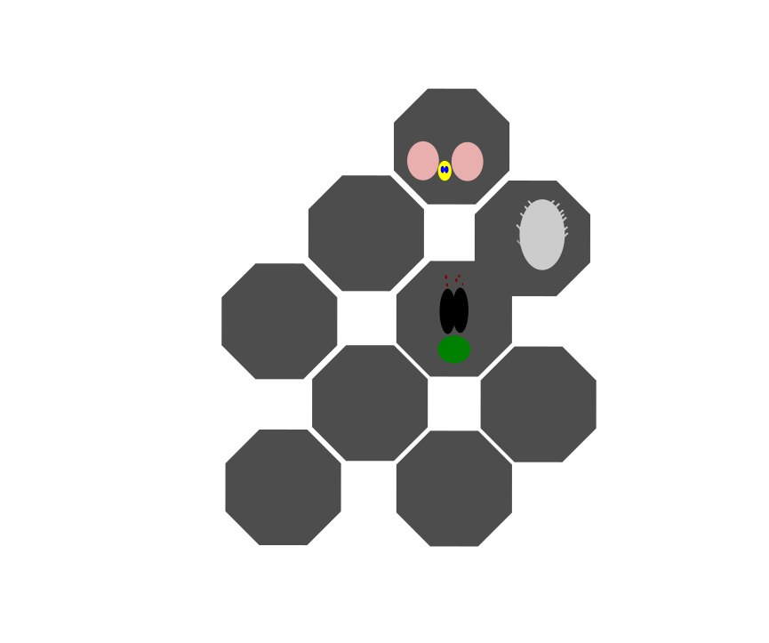
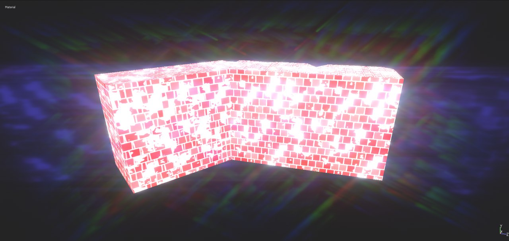

Насколько мне помнится, все началось в одном из садов Гекатомфилоса, Стовратых Фивах, в дни, когда императором был Диоклетиан. К тому времени я успел бесславно повоевать в только что закончившихся египетских войнах и был трибуном в легионе, расквартированном в Беренике, у самого Красного моря; многие из тех, кто горели желанием дать разгуляться клинку, пали жертвой лихорадки и злого колдовства. Мавританцы были повержены; земли, ранее занятые мятежными городами, навечно стали владением Плутона; и тщетно поверженная Александрия молила цезаря о милосердии; меньше года понадобилось легионам, чтобы добиться победы, я же едва успел глянуть в лицо Марсу. Бог войны обошел меня, не дал удачи, и, я, должно быть с горя, отправился через страшные, безбрежные пустыни на поиски потаенного Города Бессмертных.
Все началось, как я уже сказал, в Фивах, в саду. Я не спал — всю ночь что-то стучалось мне в сердце. Перед самой зарей я поднялся; рабы мои спали, луна стояла того же цвета, что и бескрайние пески вокруг. С востока приближался изнуренный, весь в крови всадник. Не доскакав до меня нескольких шагов, он рухнул с коня на землю. Слабым алчущим голосом спросил он на латыни, как зовется река, чьи воды омывают стены города. Я ответил, что река эта — Египет и питается она дождями. Другую реку ищу я, печально отозвался он, потаенную реку, что смывает с людей смерть. Темная кровь струилась у него из груди. Всадник сказал, что родом он с гор, которые высятся по ту сторону Ганга, и в тех горах верят: если дойти до самого запада, где кончается земля, то выйдешь к реке, чьи воды дают бессмертие. И добавил, что там, на краю земли, стоит Город Бессмертных, весь из башен, амфитеатров и храмов. Заря еще не занялась, как он умер, а я решил отыскать тот город и ту реку. Нашлись пленные мавританцы, под допросом палача подтвердившие рассказ того скитальца; кто-то припомнил елисейскую долину на краю света, где люди живут бесконечно долго; кто-то — вершины, на которых рождается река Пактол и обитатели которых живут сто лет. В Риме я беседовал с философами, полагавшими, что продлевать жизнь человеческую означает продлевать агонию и заставлять человека умирать множество раз. Не знаю, поверил ли я хоть на минуту в Город Бессмертных, думаю, тогда меня занимала сама идея отыскать его. Флавий, проконсул Гетулии, дал мне для этой цели две сотни солдат, Взял я с собой и наемников, которые утверждали, что знают дорогу, но сбежали, едва начались трудности.
Все началось, как я уже сказал, в Фивах, в саду. Я не спал — всю ночь что-то стучалось мне в сердце. Перед самой зарей я поднялся; рабы мои спали, луна стояла того же цвета, что и бескрайние пески вокруг. С востока приближался изнуренный, весь в крови всадник. Не доскакав до меня нескольких шагов, он рухнул с коня на землю. Слабым алчущим голосом спросил он на латыни, как зовется река, чьи воды омывают стены города. Я ответил, что река эта — Египет и питается она дождями. Другую реку ищу я, печально отозвался он, потаенную реку, что смывает с людей смерть. Темная кровь струилась у него из груди. Всадник сказал, что родом он с гор, которые высятся по ту сторону Ганга, и в тех горах верят: если дойти до самого запада, где кончается земля, то выйдешь к реке, чьи воды дают бессмертие. И добавил, что там, на краю земли, стоит Город Бессмертных, весь из башен, амфитеатров и храмов. Заря еще не занялась, как он умер, а я решил отыскать тот город и ту реку. Нашлись пленные мавританцы, под допросом палача подтвердившие рассказ того скитальца; кто-то припомнил елисейскую долину на краю света, где люди живут бесконечно долго; кто-то — вершины, на которых рождается река Пактол и обитатели которых живут сто лет. В Риме я беседовал с философами, полагавшими, что продлевать жизнь человеческую означает продлевать агонию и заставлять человека умирать множество раз. Не знаю, поверил ли я хоть на минуту в Город Бессмертных, думаю, тогда меня занимала сама идея отыскать его. Флавий, проконсул Гетулии, дал мне для этой цели две сотни солдат, Взял я с собой и наемников, которые утверждали, что знают дорогу, но сбежали, едва начались трудности.

Новость вторая
Новость третья

Новость четвертая